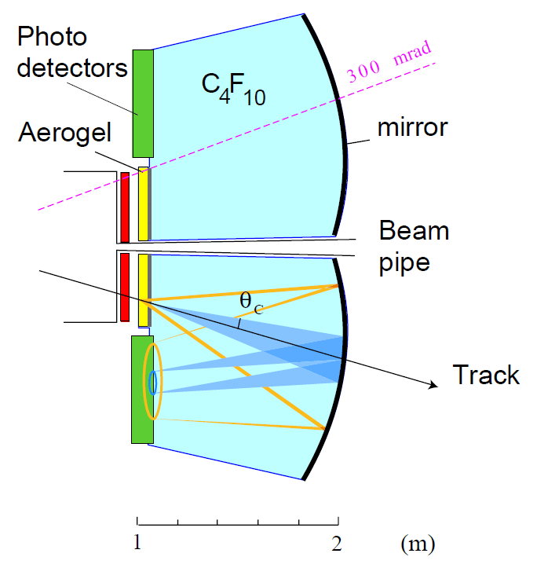
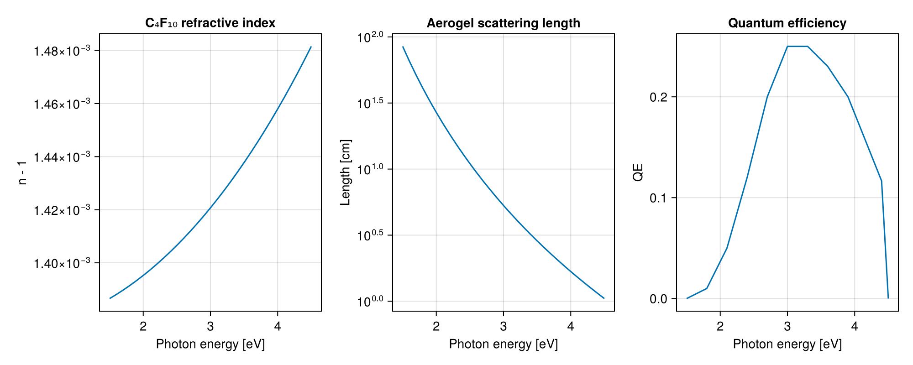
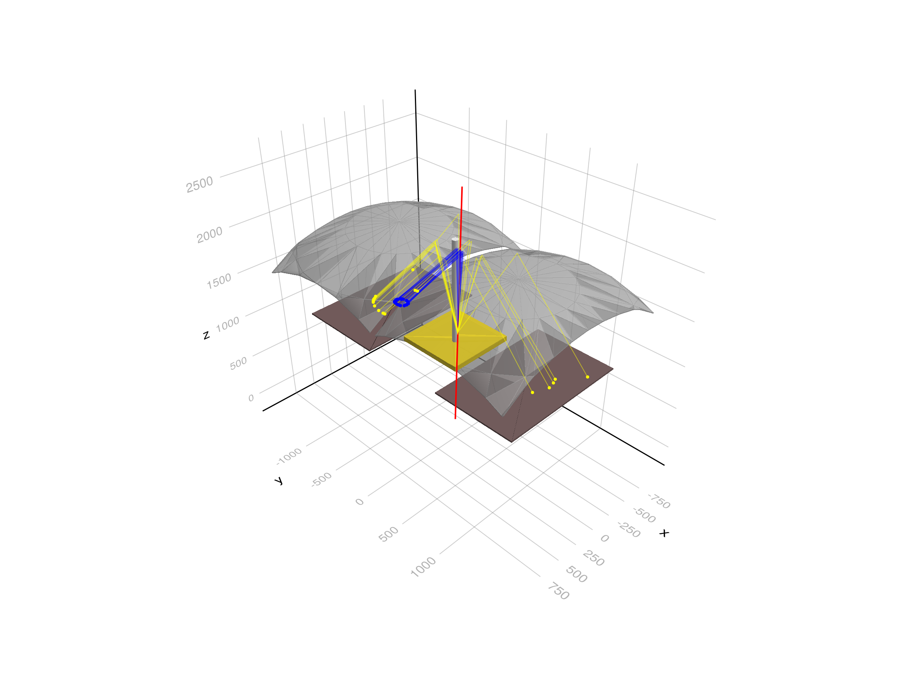
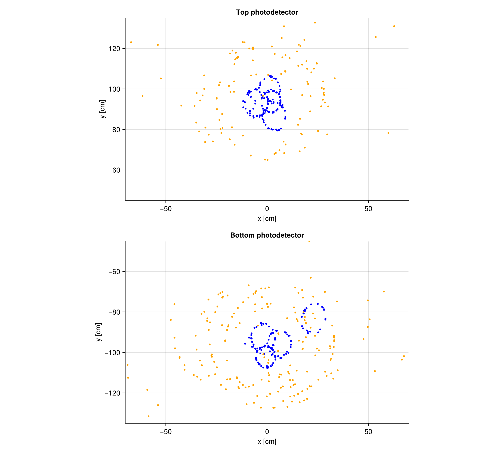
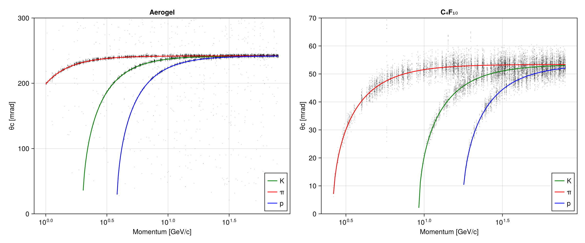
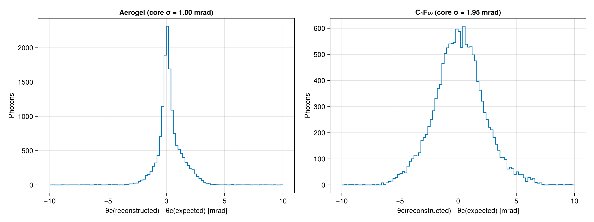
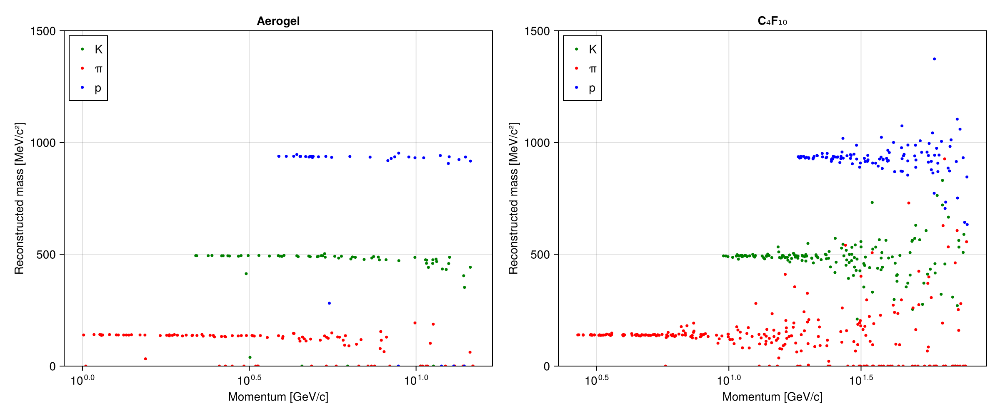

RICH Detector
This example simulates a Ring Imaging Cherenkov (RICH) detector with two radiators, similar to the RICH1 detector of LHCb as described in its Technical Design Report:

Charged particles produced at the interaction point (at the origin) cross a 5 cm thick silica aerogel tile (n = 1.03) and a volume of C₄F₁₀ gas (n ≈ 1.0014). Both radiators emit Cherenkov light at an angle $\cos\theta_C = 1/(n\beta)$. A spherical mirror reflects the light back and focuses it onto planes of photodetectors placed outside the acceptance of the spectrometer. The mirror focuses photons with the same direction to the same point, so the Cherenkov cone of each radiator is imaged as a ring. Rings of different radii from the two radiators identify particles over a wide range of momenta, from about 1 GeV/c (aerogel) to 60 GeV/c (gas).
The example shows:
- building a detector with materials and optical properties defined by functions of the photon energy, boolean solids (a spherical mirror cut to shape and an aerogel tile with a hole for the beam pipe) and a reflecting optical surface
- a primary generator that shoots pions, kaons and protons with random momentum and direction
- collecting the photons detected by the photodetectors in the stepping action, including the quantum efficiency of the photocathode
- reconstructing the Cherenkov angle of each photon from its hit position, the track and the geometry of the mirror, and separating the particle types
You can also download this example as a Jupyter notebook and a plain Julia source file.
Table of contents
- Loading the necessary Julia modules
- Define the Detector
- Define the Physics List
- Define the Primary Generator
- Define the Simulation Data
- Reconstruction of the Cherenkov angle
- Define the User Actions
- Create the Application
- Configure and Initialize
- Event display
- Run with pions, kaons and protons
- Hits on the photodetectors
- Reconstructed Cherenkov angle
- Single photon resolution
- Particle identification
Loading the necessary Julia modules
Load the Geant4, Geant4.SystemOfUnits and Geant4.PhysicalConstants modules, FHist for the histograms, LinearAlgebra and GeometryBasics for the vectors used in the reconstruction, and a Makie backend for the plots. Loading Makie also activates the drawing of the geometry.
using Geant4
using Geant4.SystemOfUnits
using Geant4.PhysicalConstants
using FHist, GeometryBasics, Printf
using LinearAlgebra: dot, normalize ## Geant4 also exports `dot`
using CairoMakie
Define the Detector
The detector is defined in the RICHDetector.jl file, which we include here not to clutter the example. Its main elements are:
- a box filled with C₄F₁₀ from z = 1 m to z = 2.1 m, crossed by a beryllium beam pipe of 3 cm radius
- a 5 cm thick aerogel tile at the entrance of the box, with a hole for the beam pipe. Aerogel scatters the light (Rayleigh scattering), with a scattering length $\lambda^4/C$ that is about 5 cm at 400 nm.
- two spherical mirrors (top and bottom) of radius R = 2 m at z ≈ 2 m, with a reflectivity of 90%. The centre of curvature of the top mirror is at y = +75 cm and z ≈ 0. The focal surface, at a distance R/2 from it, touches the surface of the photodetectors.
- two planes of photodetectors, 1 cm thick, at the entrance of the box between |y| = 45 cm and 135 cm
The refractive index of the C₄F₁₀ gas depends on the photon energy, and the photodetectors have a quantum efficiency (QE) that peaks at 25% around 3 eV (400 nm).
include(joinpath(@__DIR__, "RICHDetector.jl"))
rich = RICHDetector()
fig = Figure(size=(1000, 400))
ax1 = Axis(fig[1,1], title="C₄F₁₀ refractive index", xlabel="Photon energy [eV]", ylabel="n - 1")
lines!(ax1, photonEnergies/eV, c4f10RIndex.(photonEnergies) .- 1)
ax2 = Axis(fig[1,2], title="Aerogel scattering length", xlabel="Photon energy [eV]", ylabel="Length [cm]", yscale=log10)
lines!(ax2, photonEnergies/eV, aerogelRayleigh.(photonEnergies)/cm)
ax3 = Axis(fig[1,3], title="Quantum efficiency", xlabel="Photon energy [eV]", ylabel="QE")
lines!(ax3, photonEnergies/eV, quantumEfficiency.(photonEnergies))
Define the Physics List
We add G4OpticalPhysics to FTFP_BERT. It produces the Cherenkov photons and transports them, including Rayleigh scattering, absorption, and reflection and refraction at the boundaries.
struct RICHPhysics <: G4VUserPhysicsList
function RICHPhysics(verbose)
pl = FTFP_BERT(verbose)
RegisterPhysics(pl, move!(G4OpticalPhysics(verbose)))
return pl
end
endDefine the Primary Generator
Each event has one charged particle (π⁺, K⁺ or p with the same probability) coming from the origin. The momentum is uniform in $\log p$ between pmin and pmax, and the direction has a polar angle between θmin and θmax with respect to the beam axis (z) and a uniform azimuthal angle. The generator keeps the particle, momentum and direction of the event, which are used later by the reconstruction as if they were measured by a tracking system.
mutable struct RICHGunData <: G4JLGeneratorData
gun::Union{Nothing, CxxPtr{G4ParticleGun}}
particles::Vector{String}
pmin::Float64
pmax::Float64
θmin::Float64
θmax::Float64
##---the current track
particle::String
mass::Float64
momentum::Float64
direction::Vec3{Float64}
end
function RICHGunGenerator(; particles=["pi+", "kaon+", "proton"], pmin=1GeV, pmax=80GeV, θmin=50mrad, θmax=250mrad)
data = RICHGunData(nothing, particles, pmin, pmax, θmin, θmax, "", 0., 0., Vec3(0.,0.,1.))
function init(data::RICHGunData, ::Any)
data.gun = move!(G4ParticleGun())
SetParticlePosition(data.gun, G4ThreeVector(0, 0, 0))
end
function generate(evt::G4Event, data::RICHGunData)::Nothing
gun = data.gun
data.particle = rand(data.particles)
SetParticleByName(gun, data.particle)
data.mass = gun |> GetParticleDefinition |> GetPDGMass
data.momentum = data.pmin * (data.pmax/data.pmin)^rand()
cosθ = cos(data.θmin) - rand() * (cos(data.θmin) - cos(data.θmax)) ## uniform in solid angle
sinθ, ϕ = sqrt(1 - cosθ^2), 2π * rand()
data.direction = Vec3(sinθ * cos(ϕ), sinθ * sin(ϕ), cosθ)
SetParticleEnergy(gun, sqrt(data.momentum^2 + data.mass^2) - data.mass) ## kinetic energy
SetParticleMomentumDirection(gun, G4ThreeVector(data.direction...))
GeneratePrimaryVertex(gun, CxxPtr(evt))
end
G4JLPrimaryGenerator("RICHGun", data; init_method=init, generate_method=generate)
end
generator = RICHGunGenerator()Geant4.G4JLPrimaryGenerator{Main.var"##142".RICHGunData}("RICHGun", Main.var"##142".RICHGunData(nothing, ["pi+", "kaon+", "proton"], 1000.0, 80000.0, 0.05, 0.25, "", 0.0, 0.0, [0.0, 0.0, 1.0]), Main.var"##142".var"#init#10"(), Main.var"##142".var"#generate#11"(), Geant4.G4JLGeneratorAction[])Define the Simulation Data
Each detected photon is recorded as a Hit with its position on the photodetector, its energy and the radiator in which it was produced (taken from the Monte Carlo truth). At the end of the event the Cherenkov angle of each hit is reconstructed and the result is stored as a Photon. The Track structure keeps the true particle type, momentum and direction of each event.
struct Hit
position::Point3{Float64}
energy::Float64
radiator::Symbol ## :aerogel or :gas
primary::Bool ## produced by the primary track
end
struct Photon
event::Int
θc::Float64 ## reconstructed Cherenkov angle
radiator::Symbol
primary::Bool
end
struct Track
particle::String
mass::Float64
momentum::Float64
direction::Vec3{Float64}
end
mutable struct RICHSimData <: G4JLSimulationData
##---Cached pointers----------------------------------------------------------------------------
opticalphoton::CxxPtr{G4ParticleDefinition}
##---Event data---------------------------------------------------------------------------------
hits::Vector{Hit}
paths::Dict{Int, Vector{Point3{Float64}}} ## points of each track, when recordPaths is true
detected::Set{Int} ## IDs of the tracks of detected photons
recordPaths::Bool
##---Run data-----------------------------------------------------------------------------------
tracks::Vector{Track}
photons::Vector{Photon}
eventHits::Vector{Vector{Hit}} ## hits of the first events, for the displays
RICHSimData() = new(CxxPtr{G4ParticleDefinition}(C_NULL), Hit[], Dict(), Set{Int}(), false, Track[], Photon[], [])
endReconstruction of the Cherenkov angle
For each detected photon we know the hit position D on the photodetector and the track (from the generator). We assume that the photon was emitted at a point E in the middle of the radiator along the track. The photon was reflected by the mirror at a point M such that the angles of the incident (E → M) and reflected (M → D) photon with the normal of the mirror (along the radius from the centre of curvature C) are equal. The point M lies in the plane of C, E and D, so we can find it by a bisection in the angle around C between the directions of E and D.
function reflectionPoint(E, D, C, R)
a, b = E - C, D - C
â = normalize(a)
ĉ = normalize(b - dot(b, â) * â)
mirrorpoint(φ) = C + R * (cos(φ) * â + sin(φ) * ĉ)
function g(φ) ## difference of the cosines of the two angles
M = mirrorpoint(φ)
m = normalize(M - C)
dot(normalize(E - M), m) - dot(normalize(D - M), m)
end
lo, hi = 0., atan(dot(b, ĉ), dot(b, â))
for _ in 1:40
mid = (lo + hi) / 2
g(mid) < 0 ? (lo = mid) : (hi = mid)
end
return mirrorpoint((lo + hi) / 2)
endreflectionPoint (generic function with 1 method)Distance along a track from the origin with direction t to the sphere of centre C and radius R
function sphereIntersection(t, C, R)
b = dot(t, C)
return b + sqrt(b^2 - dot(C, C) + R^2)
endsphereIntersection (generic function with 1 method)The Cherenkov angle is the angle between the photon (E → M) and the track. Photons from the aerogel are refracted when they leave the aerogel into the gas. We undo the refraction at the downstream face of the tile (perpendicular to z) by scaling the transverse components of the direction by $n_{gas}/n_{aerogel}$. The refractive index of the gas is taken at 3.2 eV, an average energy of the detected photons.
const nGas = c4f10RIndex(3.2eV)
function cherenkovAngle(det::RICHDetector, track::Track, hit::Hit)
t = track.direction
side = hit.position[2] > 0 ? 1 : -1
C = Point3{Float64}(mirrorCentre(det, side)...)
zAerogel = det.aerogelZ + det.aerogelThickness
if hit.radiator == :aerogel
s = (det.aerogelZ + det.aerogelThickness/2) / t[3]
else
s = (zAerogel / t[3] + sphereIntersection(t, C, det.mirrorRadius)) / 2
end
E = Point3{Float64}(s * t)
M = reflectionPoint(E, hit.position, C, det.mirrorRadius)
d = normalize(M - E)
if hit.radiator == :aerogel
dt = Vec3(d[1], d[2], 0.) * nGas / det.aerogelRIndex
d = Vec3(dt[1], dt[2], sqrt(1 - dot(dt, dt)))
end
return acos(clamp(dot(d, t), -1., 1.))
endcherenkovAngle (generic function with 1 method)The expected Cherenkov angle for a particle of mass m and momentum p in a radiator of index n
function expectedAngle(n, m, p)
β = p / sqrt(p^2 + m^2)
nβ = n * β
return nβ > 1 ? acos(1/nβ) : NaN
endexpectedAngle (generic function with 1 method)Define the User Actions
- beginrun finds the optical photon definition, used in every step
- beginevent clears the hits (and the photon paths)
- pretrackaction starts a new path when the paths are recorded (for the event display). A track can be suspended and resumed (the charged track is suspended to track its Cherenkov photons first), so the points are appended to the path if it already exists.
- stepaction records an optical photon that enters a photodetector. The photon is detected with a probability equal to the quantum efficiency at its energy, and is killed in any case.
- endevent reconstructs the Cherenkov angle of the hits and stores the results
function beginrun(run::G4Run, app::G4JLApplication)::Nothing
data = getSIMdata(app)
data.opticalphoton = FindParticle("opticalphoton")
empty!(data.tracks)
empty!(data.photons)
empty!(data.eventHits)
return
end
function beginevent(evt::G4Event, app::G4JLApplication)::Nothing
data = getSIMdata(app)
empty!(data.hits)
empty!(data.paths)
empty!(data.detected)
return
end
function pretrackaction(track::G4Track, app::G4JLApplication)::Nothing
data = getSIMdata(app)
data.recordPaths || return
p = GetPosition(track)[]
push!(get!(data.paths, GetTrackID(track), Point3{Float64}[]), Point3{Float64}(x(p), y(p), z(p)))
return
end
function stepaction(step::G4Step, app::G4JLApplication)::Nothing
data = getSIMdata(app)
track = GetTrack(step)
post = GetPostStepPoint(step)
if data.recordPaths
p = GetPosition(post)[]
push!(data.paths[GetTrackID(track)], Point3{Float64}(x(p), y(p), z(p)))
end
GetParticleDefinition(track) == data.opticalphoton || return
GetStepStatus(post) == fGeomBoundary || return
pv = GetPhysicalVolume(post)
(pv == C_NULL || !startswith(String(GetName(pv)), "Photodetector")) && return
SetTrackStatus(track, fStopAndKill)
energy = GetTotalEnergy(track)
rand() < quantumEfficiency(energy) || return
p = GetPosition(post)[]
vertex = GetVertexPosition(track)[]
radiator = z(vertex) < app.detector.aerogelZ + app.detector.aerogelThickness + 1mm ? :aerogel : :gas
push!(data.hits, Hit(Point3{Float64}(x(p), y(p), z(p)), energy, radiator, GetParentID(track) == 1))
push!(data.detected, GetTrackID(track))
return
end
function endevent(evt::G4Event, app::G4JLApplication)::Nothing
data = getSIMdata(app)
gen = app.generator.data
track = Track(gen.particle, gen.mass, gen.momentum, gen.direction)
push!(data.tracks, track)
ievt = length(data.tracks)
for hit in data.hits
push!(data.photons, Photon(ievt, cherenkovAngle(app.detector, track, hit), hit.radiator, hit.primary))
end
length(data.eventHits) < 100 && push!(data.eventHits, copy(data.hits))
return
endendevent (generic function with 1 method)Create the Application
app = G4JLApplication(; detector = rich, ## detector with parameters
simdata = RICHSimData(), ## simulation data structure
generator = generator, ## primary particle generator
nthreads = 0, ## # of threads (0 = no MT)
physics_type = RICHPhysics, ## what physics list to instantiate
stepaction_method = stepaction, ## step action method
pretrackaction_method = pretrackaction, ## pre-tracking action
begineventaction_method = beginevent, ## begin-event action
endeventaction_method = endevent, ## end-event action
beginrunaction_method = beginrun ## begin run action
);
**************************************************************
Geant4 version Name: geant4-11-04-patch-01 [MT] (13-March-2026)
Copyright : Geant4 Collaboration
References : NIM A 506 (2003), 250-303
: IEEE-TNS 53 (2006), 270-278
: NIM A 835 (2016), 186-225
WWW : http://geant4.org/
**************************************************************
Configure and Initialize
configure(app)
initialize(app)### Birks coefficients used in run time
Event display
We simulate one event with a 10 GeV/c pion, recording the path of every track. We draw the geometry, together with the pion and the photons that reach the photodetectors (aerogel photons in yellow, gas photons in blue), and the hits in the photodetector.
data = getSIMdata(app)
data.recordPaths = true
generator.data.particles, generator.data.pmin, generator.data.pmax = ["pi+"], 10GeV, 10GeV
beamOn(app, 1)
data.recordPaths = false
fig = Figure(size=(1200, 900))
s = LScene(fig[1,1])
Geant4.draw!(s, GetWorldVolume())
for (id, path) in data.paths
if id == 1
lines!(s, path, color=:red, linewidth=2)
elseif id in data.detected
vertex = path[1][3] < rich.aerogelZ + rich.aerogelThickness + 1mm
lines!(s, path, color = vertex ? (:yellow, 0.5) : (:blue, 0.3), linewidth=1)
end
end
for hits in data.eventHits
scatter!(s, [p.position[1] for p in hits], [p.position[2] for p in hits], [p.position[3] + 0.1cm for p in hits],
markersize=6, color=[p.radiator == :aerogel ? :yellow : :blue for p in hits])
end
Run with pions, kaons and protons
We restore the default settings of the generator and simulate 1000 events.
generator.data.particles, generator.data.pmin, generator.data.pmax = ["pi+", "kaon+", "proton"], 1GeV, 80GeV
@time beamOn(app, 1000)
tracks, photons = data.tracks, data.photons
@printf "Number of tracks: %d, detected photons: %d\n" length(tracks) length(photons)
for rad in (:aerogel, :gas)
sel = [p for p in photons if p.radiator == rad && p.primary]
nfired = count(t -> expectedAngle(rad == :aerogel ? rich.aerogelRIndex : nGas, t.mass, t.momentum) > 0, tracks)
@printf "%-8s: %6.1f detected photons per track above threshold\n" rad length(sel)/max(nfired, 1)
end 2.122029 seconds (3.43 M allocations: 76.441 MiB, 2.84% gc time)
Number of tracks: 1000, detected photons: 33567
aerogel : 20.5 detected photons per track above threshold
gas : 26.5 detected photons per track above threshold
Hits on the photodetectors
The hits of the first 20 events on the top and bottom photodetector planes. Each track produces a large ring from the aerogel and a small ring from the gas, unless it is below the threshold of the radiator. Photons scattered in the aerogel (Rayleigh) give a diffuse background.
fig = Figure(size=(1000, 900))
for (i, side) in enumerate((1, -1))
ax = Axis(fig[i,1], title = side > 0 ? "Top photodetector" : "Bottom photodetector",
xlabel="x [cm]", ylabel="y [cm]", aspect=DataAspect())
xlims!(ax, -rich.detectorHalfX/cm, rich.detectorHalfX/cm)
ylims!(ax, side .* rich.detectorY ./ cm |> extrema)
for hits in data.eventHits[1:20]
h = [hit for hit in hits if sign(hit.position[2]) == side]
isempty(h) && continue
scatter!(ax, [p.position[1]/cm for p in h], [p.position[2]/cm for p in h], markersize=5,
color=[p.radiator == :aerogel ? :orange : :blue for p in h])
end
end
Reconstructed Cherenkov angle
The reconstructed Cherenkov angle of each photon of the primary track as a function of the momentum, for the aerogel and the gas radiators. The lines show the expected angle for pions, kaons and protons.
masses = Dict("pi+" => (139.57MeV, :red, "π"), "kaon+" => (493.68MeV, :green, "K"), "proton" => (938.27MeV, :blue, "p"))
pgrid = exp.(range(log(1GeV), log(80GeV), length=200))
fig = Figure(size=(1200, 500))
for (i, (rad, n, ymax)) in enumerate(((:aerogel, rich.aerogelRIndex, 300), (:gas, nGas, 70)))
ax = Axis(fig[1,i], title = rad == :aerogel ? "Aerogel" : "C₄F₁₀",
xlabel="Momentum [GeV/c]", ylabel="θc [mrad]", xscale=log10)
sel = [p for p in photons if p.radiator == rad && p.primary]
scatter!(ax, [tracks[p.event].momentum/GeV for p in sel], [p.θc/mrad for p in sel],
markersize=2, color=(:black, 0.2))
for (name, (m, c, label)) in masses
lines!(ax, pgrid/GeV, expectedAngle.(n, m, pgrid)/mrad, color=c, label=label)
end
ylims!(ax, 0, ymax)
axislegend(ax, position=:rb)
end
Single photon resolution
The difference between the reconstructed and the expected angle of each photon (for the true particle type). The width of the distribution is the single photon resolution, which comes from the chromatic dispersion of the radiator, the unknown emission point along the track and the aberrations of the mirror. The refractive index of the aerogel is constant in this example, so there is no chromatic dispersion for the aerogel photons. The tails come mostly from photons scattered in the aerogel.
fig = Figure(size=(1200, 450))
for (i, (rad, n)) in enumerate(((:aerogel, rich.aerogelRIndex), (:gas, nGas)))
Δθ = Float64[]
for p in photons
(p.radiator == rad && p.primary) || continue
t = tracks[p.event]
θ = expectedAngle(n, t.mass, t.momentum)
isnan(θ) || push!(Δθ, (p.θc - θ)/mrad)
end
h = Hist1D(Δθ; binedges=range(-10, 10, length=101))
core = filter(x -> abs(x) < 5, Δθ)
μ, σ = sum(core)/length(core), sqrt(sum(abs2, core .- sum(core)/length(core))/length(core))
ax = Axis(fig[1,i], title = (rad == :aerogel ? "Aerogel" : "C₄F₁₀") * @sprintf(" (core σ = %.2f mrad)", σ),
xlabel="θc(reconstructed) - θc(expected) [mrad]", ylabel="Photons")
stephist!(ax, h)
end
Particle identification
For each track we average the Cherenkov angle of the photons of each radiator, rejecting the photons more than 3σ away from the mean (iteratively), and compute the mass from the angle and the momentum: $m = p\sqrt{n^2\cos^2\theta_C - 1}$. The C₄F₁₀ gas separates the particle types above about 10 GeV/c and the aerogel below.
function trackAngle(θs, σ)
isempty(θs) && return NaN
μ = sum(θs) / length(θs)
for _ in 1:3
sel = filter(θ -> abs(θ - μ) < 3σ, θs)
isempty(sel) && return NaN
μ = sum(sel) / length(sel)
end
return μ
end
fig = Figure(size=(1200, 500))
for (i, (rad, n, σ, pmax)) in enumerate(((:aerogel, rich.aerogelRIndex, 5mrad, 15GeV), (:gas, nGas, 2mrad, 80GeV)))
ax = Axis(fig[1,i], title = rad == :aerogel ? "Aerogel" : "C₄F₁₀",
xlabel="Momentum [GeV/c]", ylabel="Reconstructed mass [MeV/c²]", xscale=log10)
θs = [Float64[] for _ in tracks]
for p in photons
p.radiator == rad && p.primary && push!(θs[p.event], p.θc)
end
for (name, (m, c, label)) in masses
idx = [j for (j, t) in enumerate(tracks) if t.particle == name && t.momentum < pmax && length(θs[j]) >= 3]
θ = [trackAngle(θs[j], σ) for j in idx]
mass = [tracks[j].momentum * sqrt(max(n^2 * cos(θ[k])^2 - 1, 0.)) for (k, j) in enumerate(idx)]
scatter!(ax, [tracks[j].momentum/GeV for j in idx], mass/MeV, color=c, markersize=5, label=label)
end
ylims!(ax, 0, 1500)
axislegend(ax, position=:lt)
end
This page was generated using Literate.jl.